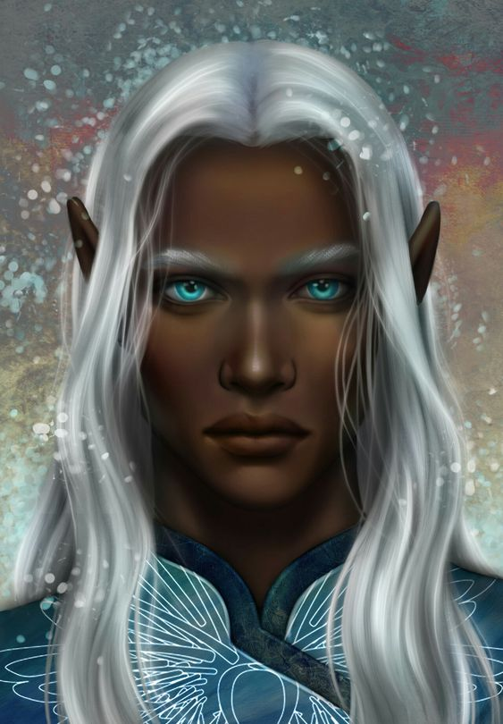

A Corte Estival é uma das sete cortes do território de Prythian e uma das quatro Cortes Sazonais. A Corte Estival possui quatro cidades, uma das quais é a cidade é Adriata, onde o Grão Senhor da Corte Estival passa as últimas semanas do inverno e as primeiras semanas da primavera. Os Grão Feéricos da Corte Estival, assim como seu Grão-Senhor, possuem a pele escura, cabelos brancos ou prateados e geralmente vestem roupas leves e soltas. Seus olhos, no entanto, possuem tonalidades variadas.
Tarquin é o Lorde Supremo da Corte Estival e o mais novo dos Grão Senhores. A Corte Estival foi um das três cortes, juntamente com a Corte Diurna e a Corte Invernal , a se rebelar contra o domínio de Amarantha sobre Prythian, o que resultou no antigo Grão-Senhor, Nostrus, e toda a sua família ser assassinada por Amarantha. Após isso, Tarquin, um príncipe e almirante da Corte Estival, tornou-se o novo Lorde Supremo.
O palácio em Adriata é construído no topo de uma ilha montanhosa no coração de uma baía de meia-lua. A cidade circunda a ilha em três lados e se espalha em direção ao mar cintilante.